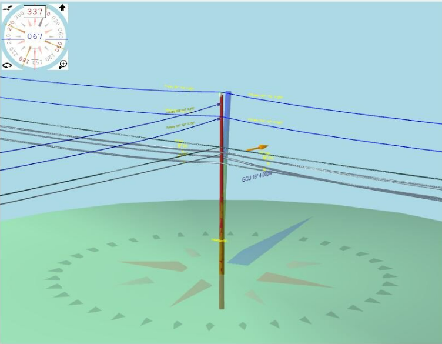

Featured Work
Fiber Design & Drafting services

We specialize in OSP fiber network design with expertise in ARAMIS, ArcGIS Pro, and AutoCAD. Our services include fiber route planning, detailed CAD drawings, GIS mapping, permit & construction drawings, and as-built documentation.
With years of experience, we deliver precise, scalable, and efficient designs for telecom companies, ISPs, and infrastructure providers.
Pole Loading Analysis & Make-Ready Engineering Solutions
 Whether you need a Pole Loading Analysis using O-Calc Pro or SPIDAcalc, we ensure accurate assessments to maintain structural integrity and compliance with industry standards. Our analysis evaluates the impact of additional loads on utility poles, identifying potential risks and necessary reinforcements to support safe and efficient network deployment.
With a focus on precision and reliability, our Make-Ready Engineering services streamline the preparation process for new attachments, minimizing delays and ensuring smooth project execution.